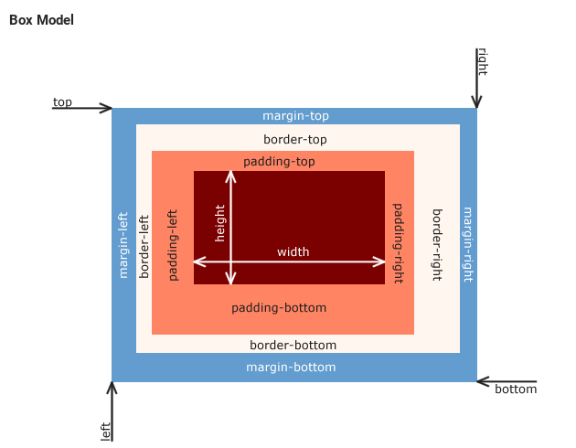

NAME: David Tanko
Why i love technology
Technology stimulates my imagination. Technology is also fun, because I learn more, and can experience more on computers, because computer is Technology.
I love technology because it's the triumph of the human intellect. The more I study and understand technology, the more I feel that nothing in the universe is out of reach. There’s even a great rush of power that comes from coding your first simple “Hello World” program. Getting it to run successfully, seeing those two words on the screen and knowing that YOU put them there just makes you think of the endless possibilities…
I love technology because I believe in progress. People inevitably use technology to improve lives and help others. We spread knowledge, make tasks easier, and make systems more efficient.
I love technology because it opens up educational opportunities to the masses. Blog posts, forums, eBooks, Massive Open Online Courses, etc. offer tons of information on every topic under the sun
What I HAVE LEARNED ABOUT CSS AND ITS IMPORTANCE
CSS- Cascading Style Sheets is a language the comes through and specifies my document's style, i.e it help in beautifying my page by augumenting html. CSS can be applied through inline styling, internal styling and external styling pending on what i desire, i have also learn about content, padding, boarder and margin through css. Moreso, my css content depneds on the what i want ot achieve, there are a lot of open source content out there depending in on what i want, in addition, i have also learned about class, ID.
The important of css in any webpage can't be empahsis, because it is that that language that adds ambience to the entire page for html cant do it all alone.
The different betweeen padding, margins, and borders
Imagine that you have a set of framed and matted photographs hanging on a wall. Each photo is surrounded by a mat that puts space between the photo and the frame. That space would be the padding. The frame encloses the mat and the image. That would be the border. Each picture has a set amount of space around the outside. That is the margin. If two pictures are handing side by side with four inches between them, then we might say that they each have a two inch margin. The margin is the distance between an element and something else. In Web development it is particularly important to know the size of each if we are placing elements side by side within a parent container.
Padding is the space between the content and the border, whereas margin is the space outside the border. For quick illustration of the idea, here is a picture I found online that is very helpful.
